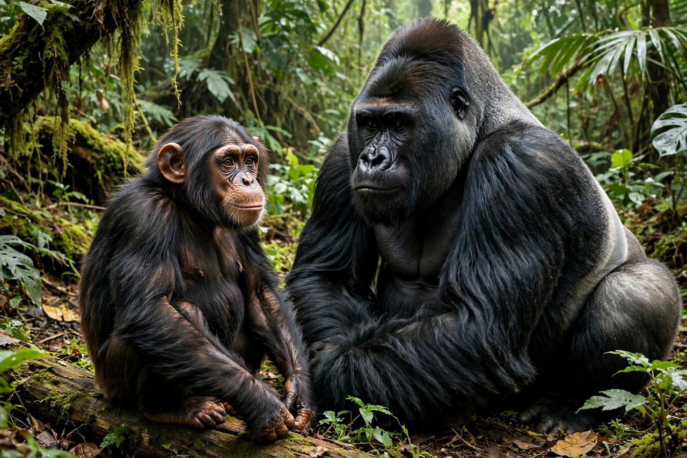

Apes (superfamily Hominoidea) are tailless primates native to Africa and Southeast Asia, comprising gibbons (lesser apes) and hominids (great apes): orangutans, gorillas, chimpanzees, bonobos and humans.

Apes have larger brains relative to body size, mobile shoulder joints adapted for swinging and suspension, no external tail, and complex social behaviour and cognition including tool use and, in great apes, self-recognition.
Apes diverged from Old World monkeys about 25 million years ago. Humans share about 98-99% of DNA with chimpanzees and bonobos, our closest living relatives.
Most non-human ape species are endangered or critically endangered due to habitat loss, hunting and disease.